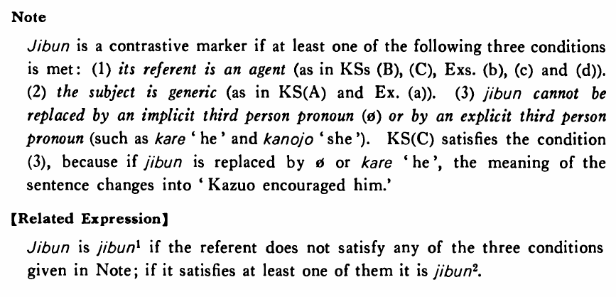

自分・じぶん (2) (B. 161)
- (ksa).
- 日本人は自分の国の文化をユニークだと思っている・います。
- The Japanese think that their country's culture is unique.
- (ksb).
- メアリーは自分で何でもする・します。
- Mary does everything by herself.
- (ksc).
- 一男は自分を励ました・励ましました。
- Kazuo braced himself.
- (a).
- 自分を知ることが一番難しい。
- To know yourself is the hardest.
- (b).
- マイクはいつも自分の寮の部屋で勉強している。
- Mike is always studying in his own dorm room.
- (c).
- 小林は自分からしたいと言った。
- Kobayashi voluntarily (literally: from himself) said that he wanted to do it.
- (d).
- 先生はご自分の家で私に会って下さった。
- The professor kindly met me at his own house.
